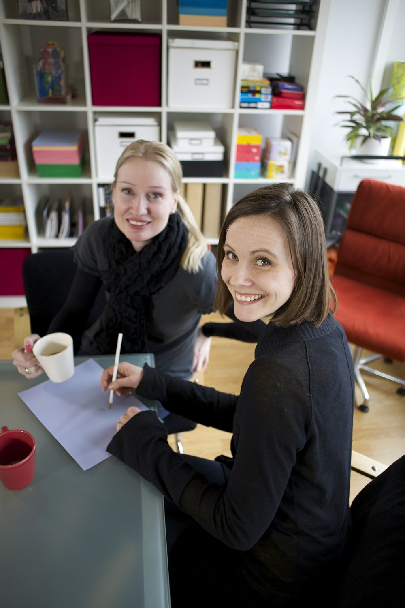

Jag heter Nana, trevligt att träffas! Jag är talterapeut och arbetar helst med vuxna som har förvärvade språk- och kommunikationssvårigheter. Jag är också huvuddesigner för Sanapsis-apparna.
Vi började utveckla Sanapsis redan 2009. Vår privatpraktik Puheklinikka Oy är specialiserad på neurologisk talterapi för vuxna. Från början skapades Sanapsis som ett internt verktyg. Vi ville ha snabb tillgång till högkvalitativt, vardagsnära material som speglar våra patienters egen vardagsmiljö. Lika viktigt var ett verktyg som ger utrymme för flexibla mål och stöder ett meningsfullt samspel mellan terapeut och patient.
Efter mycket (och vi menar mycket!) prövande och omprövande började SanapsisPro likna det vi hade föreställt oss.
Ett stort tack går till våra fantastiska patienter, som har varit djupt involverade i att utforma och testa appen. Du ser till och med några av deras ansikten i materialet; de är verkligen en del av Sanapsis historia.
I början av 2021 lanserade vi Sanapsis+ på allmän begäran, för självständig träning hemma.
Vi hör gärna av kollegor. Om du vill prova Sanapsis+ med dina patienter, hör av dig.